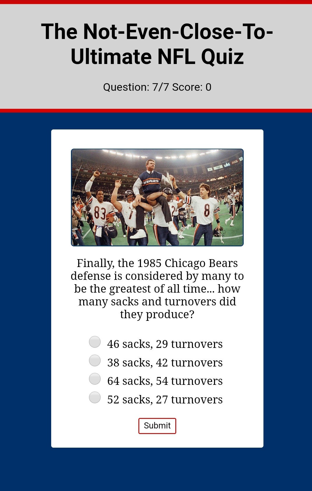

NFL Quiz
A short (and quite difficult) 7-question quiz covering individual/team statistics and league history.
Technologies used: HTML, CSS, JavaScript, jQuery.
Take the quiz here.
View the code here.
Whether it’s cooking a delicious meal on the fly, coming up with an innovative solution for a problem around the house or building a Lego tower with my son, I have an innate need to create. I’m a big proponent of doing things the way they are meant to be done, but in a way that doesn’t hinder ingenuity. I place a high value on efficiency and consistency. Seeing something I’ve coded not just working, but working well, is highly fulfilling.
When I’m not coding, I enjoy going on walks down at the lakefront, meeting friends at the beer garden, playing with/teaching my son and perusing local farmers' markets. I’ve also been known to watch some sports from time to time and even catch the occasional movie with my wife.
A short (and quite difficult) 7-question quiz covering individual/team statistics and league history.
Technologies used: HTML, CSS, JavaScript, jQuery.
Take the quiz here.
View the code here.
A simple yet useful app that allows users to search for breweries anywhere in the U.S. by state and, if they choose, also by city and/or brewery type.
Technologies used: HTML, CSS, JavaScript, jQuery.
Use the app here.
View the code here.